This is the full illustrated version of a teaching presentation prepared by Dr. Ramandeep Kaur (Dept. of Radiodiagnosis, GMC Patiala). Every slide is shown below with its text, so you can read it like an article — or download the original PowerPoint (.pptx) to teach from it. Topics covered include: CASE PRESENTATION; USG AT AT 20 WEEKS OF AUA; IMAGING FINDINGS: ULTRASOUND (29/09/2026); IMAGING FINDINGS: ULTRASOUND + DOPPLER (29/09/2026); FETAL MRI (29/09/2026); IMAGING FINDINGS: FETAL MRI (29/09/2026); DIFFERENTIAL DIAGNOSIS.
Contents — jump to a slide (12)
- ANTENATAL DIAGNOSIS OF BILATERAL CONGENITAL PULMONARY AIRWAY MALFORMATION (CPAM)
- ABSTRACT
- CASE PRESENTATION
- USG AT AT 20 WEEKS OF AUA
- IMAGING FINDINGS: ULTRASOUND (29/09/2026)
- IMAGING FINDINGS: ULTRASOUND + DOPPLER (29/09/2026)
- FETAL MRI (29/09/2026)
- IMAGING FINDINGS: FETAL MRI (29/09/2026)
- DIFFERENTIAL DIAGNOSIS
- DISCUSSION
- CONCLUSION
- REFERENCES
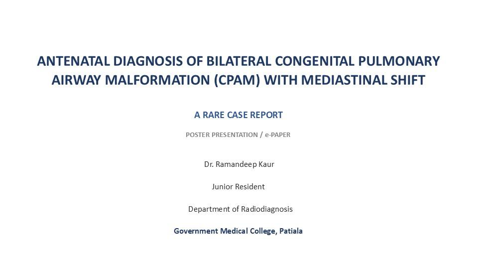
ANTENATAL DIAGNOSIS OF BILATERAL CONGENITAL PULMONARY AIRWAY MALFORMATION (CPAM) WITH MEDIASTINAL SHIFT
- A RARE CASE REPORT
- POSTER PRESENTATION / e-PAPER
- Dr. Ramandeep Kaur
- Junior Resident
- Department of Radiodiagnosis
- Government Medical College, Patiala
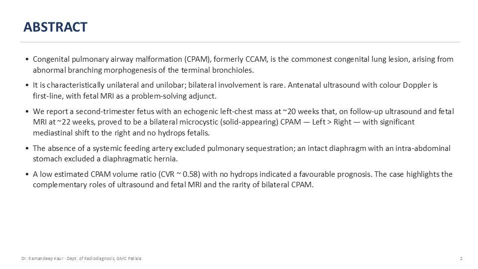
ABSTRACT
- Congenital pulmonary airway malformation (CPAM), formerly CCAM, is the commonest congenital lung lesion, arising from abnormal branching morphogenesis of the terminal bronchioles.
- It is characteristically unilateral and unilobar; bilateral involvement is rare. Antenatal ultrasound with colour Doppler is first-line, with fetal MRI as a problem-solving adjunct.
- We report a second-trimester fetus with an echogenic left-chest mass at ~20 weeks that, on follow-up ultrasound and fetal MRI at ~22 weeks, proved to be a bilateral microcystic (solid-appearing) CPAM — Left > Right — with significant mediastinal shift to the right and no hydrops fetalis.
- The absence of a systemic feeding artery excluded pulmonary sequestration; an intact diaphragm with an intra-abdominal stomach excluded a diaphragmatic hernia.
- A low estimated CPAM volume ratio (CVR ~ 0.58) with no hydrops indicated a favourable prognosis. The case highlights the complementary roles of ultrasound and fetal MRI and the rarity of bilateral CPAM.
- 2
- Dr. Ramandeep Kaur · Dept. of Radiodiagnosis, GMC Patiala
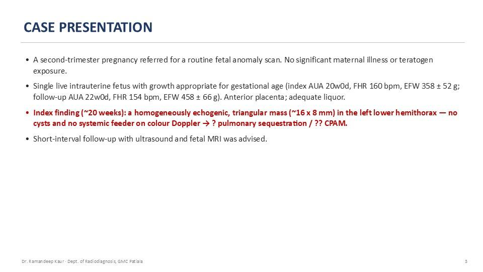
CASE PRESENTATION
- A second-trimester pregnancy referred for a routine fetal anomaly scan. No significant maternal illness or teratogen exposure.
- Single live intrauterine fetus with growth appropriate for gestational age (index AUA 20w0d, FHR 160 bpm, EFW 358 ± 52 g; follow-up AUA 22w0d, FHR 154 bpm, EFW 458 ± 66 g). Anterior placenta; adequate liquor.
- Index finding (~20 weeks): a homogeneously echogenic, triangular mass (~16 x 8 mm) in the left lower hemithorax — no cysts and no systemic feeder on colour Doppler → ? pulmonary sequestration / ?? CPAM.
- Short-interval follow-up with ultrasound and fetal MRI was advised.
- 3
- Dr. Ramandeep Kaur · Dept. of Radiodiagnosis, GMC Patiala
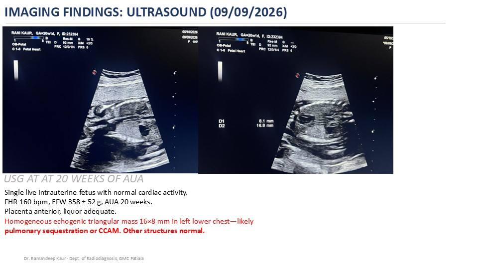
USG AT AT 20 WEEKS OF AUA
- IMAGING FINDINGS: ULTRASOUND (09/09/2026)
- Single live intrauterine fetus with normal cardiac activity.
- FHR 160 bpm, EFW 358 ± 52 g, AUA 20 weeks.
- Placenta anterior, liquor adequate.
- Homogeneous echogenic triangular mass 16×8 mm in left lower chest—likely
- pulmonary sequestration or CCAM. Other structures normal.
- Dr. Ramandeep Kaur · Dept. of Radiodiagnosis, GMC Patiala
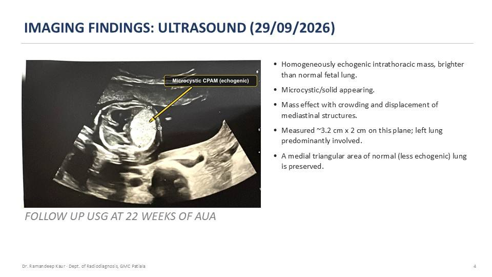
IMAGING FINDINGS: ULTRASOUND (29/09/2026)
- FOLLOW UP USG AT 22 WEEKS OF AUA
- Homogeneously echogenic intrathoracic mass, brighter than normal fetal lung.
- Microcystic/solid appearing.
- Mass effect with crowding and displacement of mediastinal structures.
- Measured ~3.2 cm x 2 cm on this plane; left lung predominantly involved.
- A medial triangular area of normal (less echogenic) lung is preserved.
- 4
- Dr. Ramandeep Kaur · Dept. of Radiodiagnosis, GMC Patiala
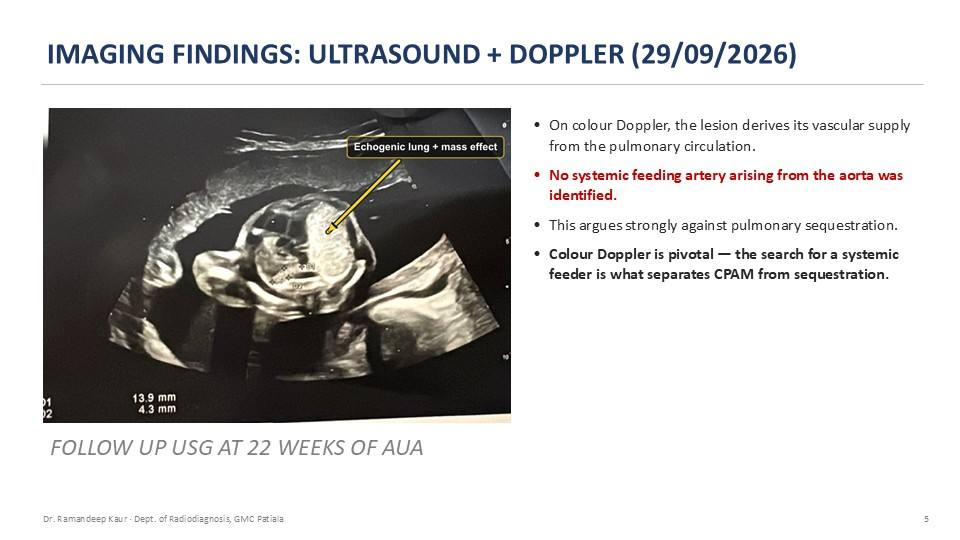
IMAGING FINDINGS: ULTRASOUND + DOPPLER (29/09/2026)
- FOLLOW UP USG AT 22 WEEKS OF AUA
- On colour Doppler, the lesion derives its vascular supply from the pulmonary circulation.
- No systemic feeding artery arising from the aorta was identified.
- This argues strongly against pulmonary sequestration.
- Colour Doppler is pivotal — the search for a systemic feeder is what separates CPAM from sequestration.
- 5
- Dr. Ramandeep Kaur · Dept. of Radiodiagnosis, GMC Patiala
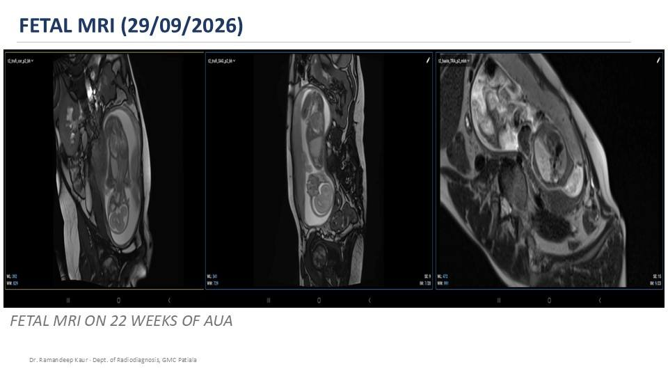
FETAL MRI (29/09/2026)
- FETAL MRI ON 22 WEEKS OF AUA
- Dr. Ramandeep Kaur · Dept. of Radiodiagnosis, GMC Patiala
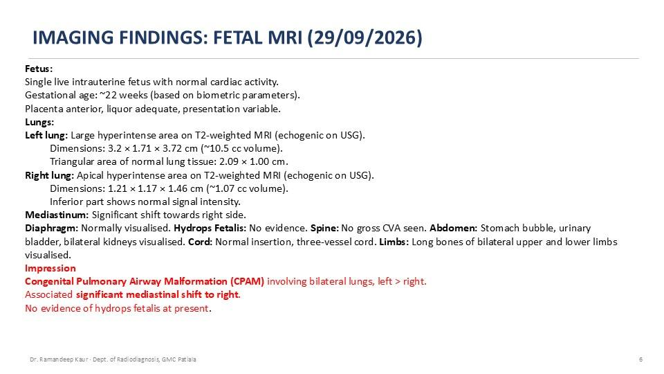
IMAGING FINDINGS: FETAL MRI (29/09/2026)
- Fetus:
- Single live intrauterine fetus with normal cardiac activity.
- Gestational age: ~22 weeks (based on biometric parameters).
- Placenta anterior, liquor adequate, presentation variable.
- Lungs:
- Left lung: Large hyperintense area on T2-weighted MRI (echogenic on USG).
- Dimensions: 3.2 × 1.71 × 3.72 cm (~10.5 cc volume).
- Triangular area of normal lung tissue: 2.09 × 1.00 cm.
- Right lung: Apical hyperintense area on T2-weighted MRI (echogenic on USG).
- Dimensions: 1.21 × 1.17 × 1.46 cm (~1.07 cc volume).
- Inferior part shows normal signal intensity.
- Mediastinum: Significant shift towards right side.
- Diaphragm: Normally visualised. Hydrops Fetalis: No evidence. Spine: No gross CVA seen. Abdomen: Stomach bubble, urinary bladder, bilateral kidneys visualised. Cord: Normal insertion, three-vessel cord. Limbs: Long bones of bilateral upper and lower limbs visualised.
- Impression
- Congenital Pulmonary Airway Malformation (CPAM) involving bilateral lungs, left > right.
- Associated significant mediastinal shift to right.
- No evidence of hydrops fetalis at present.
- 6
- Dr. Ramandeep Kaur · Dept. of Radiodiagnosis, GMC Patiala
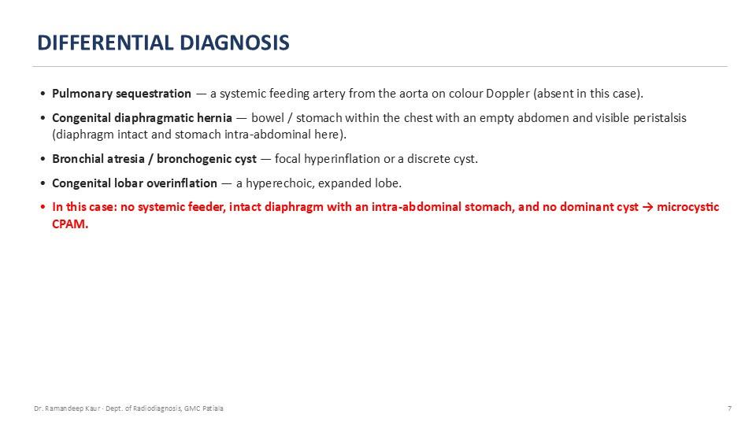
DIFFERENTIAL DIAGNOSIS
- Pulmonary sequestration — a systemic feeding artery from the aorta on colour Doppler (absent in this case).
- Congenital diaphragmatic hernia — bowel / stomach within the chest with an empty abdomen and visible peristalsis (diaphragm intact and stomach intra-abdominal here).
- Bronchial atresia / bronchogenic cyst — focal hyperinflation or a discrete cyst.
- Congenital lobar overinflation — a hyperechoic, expanded lobe.
- In this case: no systemic feeder, intact diaphragm with an intra-abdominal stomach, and no dominant cyst → microcystic CPAM.
- 7
- Dr. Ramandeep Kaur · Dept. of Radiodiagnosis, GMC Patiala
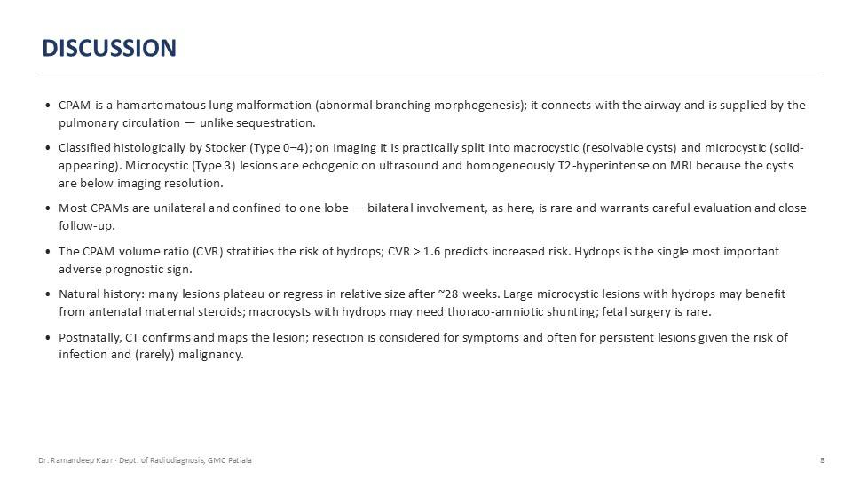
DISCUSSION
- CPAM is a hamartomatous lung malformation (abnormal branching morphogenesis); it connects with the airway and is supplied by the pulmonary circulation — unlike sequestration.
- Classified histologically by Stocker (Type 0–4); on imaging it is practically split into macrocystic (resolvable cysts) and microcystic (solid-appearing). Microcystic (Type 3) lesions are echogenic on ultrasound and homogeneously T2-hyperintense on MRI because the cysts are below imaging resolution.
- Most CPAMs are unilateral and confined to one lobe — bilateral involvement, as here, is rare and warrants careful evaluation and close follow-up.
- The CPAM volume ratio (CVR) stratifies the risk of hydrops; CVR > 1.6 predicts increased risk. Hydrops is the single most important adverse prognostic sign.
- Natural history: many lesions plateau or regress in relative size after ~28 weeks. Large microcystic lesions with hydrops may benefit from antenatal maternal steroids; macrocysts with hydrops may need thoraco-amniotic shunting; fetal surgery is rare.
- Postnatally, CT confirms and maps the lesion; resection is considered for symptoms and often for persistent lesions given the risk of infection and (rarely) malignancy.
- 8
- Dr. Ramandeep Kaur · Dept. of Radiodiagnosis, GMC Patiala
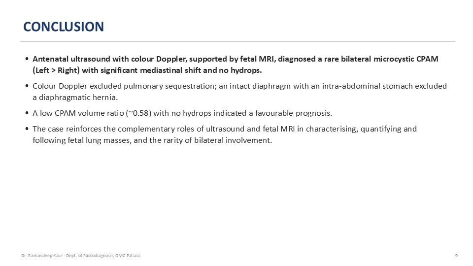
CONCLUSION
- Antenatal ultrasound with colour Doppler, supported by fetal MRI, diagnosed a rare bilateral microcystic CPAM (Left > Right) with significant mediastinal shift and no hydrops.
- Colour Doppler excluded pulmonary sequestration; an intact diaphragm with an intra-abdominal stomach excluded a diaphragmatic hernia.
- A low CPAM volume ratio (~0.58) with no hydrops indicated a favourable prognosis.
- The case reinforces the complementary roles of ultrasound and fetal MRI in characterising, quantifying and following fetal lung masses, and the rarity of bilateral involvement.
- 9
- Dr. Ramandeep Kaur · Dept. of Radiodiagnosis, GMC Patiala
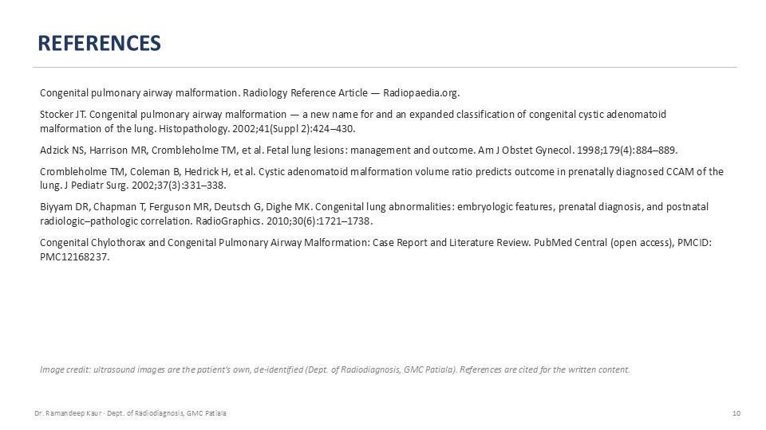
REFERENCES
- Congenital pulmonary airway malformation. Radiology Reference Article — Radiopaedia.org.
- Stocker JT. Congenital pulmonary airway malformation — a new name for and an expanded classification of congenital cystic adenomatoid malformation of the lung. Histopathology. 2002;41(Suppl 2):424–430.
- Adzick NS, Harrison MR, Crombleholme TM, et al. Fetal lung lesions: management and outcome. Am J Obstet Gynecol. 1998;179(4):884–889.
- Crombleholme TM, Coleman B, Hedrick H, et al. Cystic adenomatoid malformation volume ratio predicts outcome in prenatally diagnosed CCAM of the lung. J Pediatr Surg. 2002;37(3):331–338.
- Biyyam DR, Chapman T, Ferguson MR, Deutsch G, Dighe MK. Congenital lung abnormalities: embryologic features, prenatal diagnosis, and postnatal radiologic–pathologic correlation. RadioGraphics. 2010;30(6):1721–1738.
- Congenital Chylothorax and Congenital Pulmonary Airway Malformation: Case Report and Literature Review. PubMed Central (open access), PMCID: PMC12168237.
- Image credit: ultrasound images are the patient’s own, de-identified (Dept. of Radiodiagnosis, GMC Patiala). References are cited for the written content.
- 10
- Dr. Ramandeep Kaur · Dept. of Radiodiagnosis, GMC Patiala
Use this deck in your teaching
The original editable PowerPoint is free to download for non-commercial teaching, with credit to the author. Questions or corrections? Contact us.
About this deck
Prepared by Dr. Ramandeep Kaur (Dept. of Radiodiagnosis, GMC Patiala) for postgraduate and clinical teaching, and published on OrthoChronicles, whose clinical library is curated under the guidance of Dr. Maninder Singh (MS Orthopaedics, GMCH Amritsar). Where images are from open-licence sources (for example Wikimedia Commons), the licence and author appear on the slide. See our editorial policy. Educational use only — not medical advice; see Terms & Medical Disclaimer.